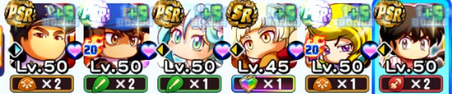
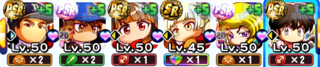

![[エース]沢村栄純のアイコン](../../img/chars/0006.png)
イベキャラ データ
[エース]沢村栄純 評価・イベントまとめ
読み：[えーす]さわむらえいじゅん
[エース]沢村栄純の基本情報
| 得意練習 | スタミナ / コントロール |
|---|---|
| イベント前後 | 後 |
| 基礎上限※ | スタミナ上限：4(SR) 10(PSR) |
| 投手金特 | 強心臓＋エースの風格 闘魂 |
| 野手金特 | 一球入魂 |
| 友情特殊能力 | なし |
| 練習改革 | スタミナ練習改革(変化球) |
| アイテム追加枠 | アロマグッズ |
※ 覚醒で付く分も表記
[エース]沢村栄純の重要ボーナス
| 練習効果アップ | 40% |
|---|---|
| スペシャルタッグボーナス | 160%⇒175%(PSR42)⇒190%(Lv45)⇒200%(Lv50) |
| スタミナ上限アップ | 4(SR) 10(PSR覚醒含む) |
| スタミナ練習改革(変化球) | 6(固有) |
| 追加枠 | アロマグッズ |
その他ボーナスはこちらをタップ
| 初期評価 | 60⇒65(SR37)⇒70(SR40)⇒80(PSR40) |
|---|---|
| 変化球ボーナス | 6 |
| コツイベントボーナス | 150%(SR覚醒含む) |
| 得意練習率アップ | 10% |
| スペシャルタッグ「スタミナ」 | 4 |
| コツレベルボーナス | 2 |
[エース]沢村栄純のイベント詳細
金特イベント ナンバーズ[複]
・1回目
| ＋ | その他 |
|---|---|
技術+ 精神+ | 【投手】 対左打者 【野手】 対左投手 |
・2回目
| ＋ | その他 | |
|---|---|---|
| 打たせて取るつもりか？ （イベント継続） | 沢村評価+5 技術++ 敏捷(変化球)++ | |
| 相手の打線を研究しよう （イベント終了） | 沢村評価+5 技術+++ 敏捷(変化球)+++ | 【投手】 闘魂 【野手】 速攻〇 |
・3回目
| ＋ | その他 |
|---|---|
沢村評価+15 技術++++ 敏捷(変化球)++++ 精神++++ | 【投手】 強心臓 エー 【野手】 一球入魂 |
共通イベント
・自己紹介
| ＋ |
|---|
沢村評価+5 筋力+ |
・投手の理念
| ＋ | その他 | |
|---|---|---|
| 沢村をほめる | 沢村評価+5 技術+++ 敏捷(変化球)+++ | |
| 沢村の姿勢を見習う | 沢村評価+5 精神++ | 【投手】 闘志 【野手】 鼓舞 |
・エースになるために
| ＋ | その他 | |
|---|---|---|
| そんな単純な話じゃないよ | 技術++ 精神++ | 【投手】 速球対抗心 【野手】 競争心 |
| お前なら大丈夫だ （成功） | いいヤツになる 沢村評価+5 技術+++ 精神+++ | 【投手】 勝ち運 【野手】 ムー |
| お前なら大丈夫だ （失敗） | やる気- 精神+ | |
| エースってなんだと思う？ | 体力- 筋力++ 技術++ 敏捷(変化球)++ 精神++ |
[エース]沢村栄純のコンボイベント
俺がエースだ！（ａｃｔⅡ）
| コンボキャラ | 沢村栄純、 |
|---|---|
| イベント前後 | 後 |
| ＋ | その他 | |
|---|---|---|
| 仲裁する | 技術+++ 精神+++ | 【投手】 速球対抗心 【野手】 競争心 |
| 放っておく | 体力+ 精神+++ | 【投手】 緩急〇 【野手】 帳尻合わせ |
| 自分も加わる | 沢村評価+5 降谷評価+5 体力- 筋力++++ 精神++++ | 【投手】 根性〇 【野手】 粘り打ち |
フィッシング！（ａｃｔⅡ）
| コンボキャラ | 沢村栄純、 |
|---|---|
| イベント前後 | 後 |
| ＋ | その他 | |
|---|---|---|
| 食べよう | 体力+++ 沢村評価+15 筋力+++ 敏捷(変化球)+ | 【投手】 対左打者 【野手】 高速チャー |
| 川に放そう | 降谷評価+15 技術+++ 精神+ やる気++ | 【投手】 リリー 【野手】 流し打ち |
| 小湊の意見を採用しよう | 小湊評価+15 体力+ 筋力++ 技術++ やる気+ | 【投手】 尻上がり 【野手】 いぶし銀 |
窮地（ａｃｔⅡ）
| コンボキャラ | 沢村栄純、 |
|---|---|
| イベント前後 | 前 |
| ＋ | その他 | |
|---|---|---|
| 奥村を励ます | 奥村評価+5 筋力++ 技術++ | 【投手】 ポー 【野手】 守備職人 |
| 沢村を励ます | 沢村評価+5 技術++ 精神++ | 【投手】 変化球対抗心 【野手】 対エー |
| 2人まとめて深呼吸させる | 体力+ 沢村評価+5 奥村評価+5 精神+++ |
[エース]沢村栄純の評価
【長所】
・10月実装時点で練習効果、タッグボーナスの両方が高水準。
・追加枠アロマグッズのおかげで不眠症・サボりぐせ対策が可能。ロマン開花學園はやる気によって開花試合の経験点も変わるため、絶好調を保ちやすくなるのもありがたい。
・現在のオリジン6投手育成において、スタミナボーナス持ちのタッグでスタミナを上げれるのは大きなアドバンテージになる。
・スタミナ練習改革持ち。ロマン開花學園では、スタミナ練習でも変化経験点を稼ぎやすくなるのでありがたい。
【短所】
・Lv45未満だとタッグボーナスが大きく下がる。出来ればLv45まで上限開放して使いたい。
【記入日2026/11/07】
[エース]沢村栄純の使用デッキ例
ロマン開花學園（先・メイン）

ロマン開花學園（先・メイン）



[エース]沢村栄純の選手能力
| 選手ランク | S3120 |
|---|---|
| メインポジション | 投 |
| サブポジション | なし |
| 利き腕 | 左投左打 |
野手能力
弾道2
ミートE40
パワーE40
走力E40
肩力C60
守備力D52
捕球E40
投手能力
球速140km/h
コントロールB70
スタミナB70
変化球
野手特殊能力
ケガしにくさ◎バント職人
投手特殊能力
対ピンチ◎ケガしにくさ◎ノビ○リリース○闘魂クロスファイヤー球持ち○
その他特殊能力
強振多用ムード○テンポ○